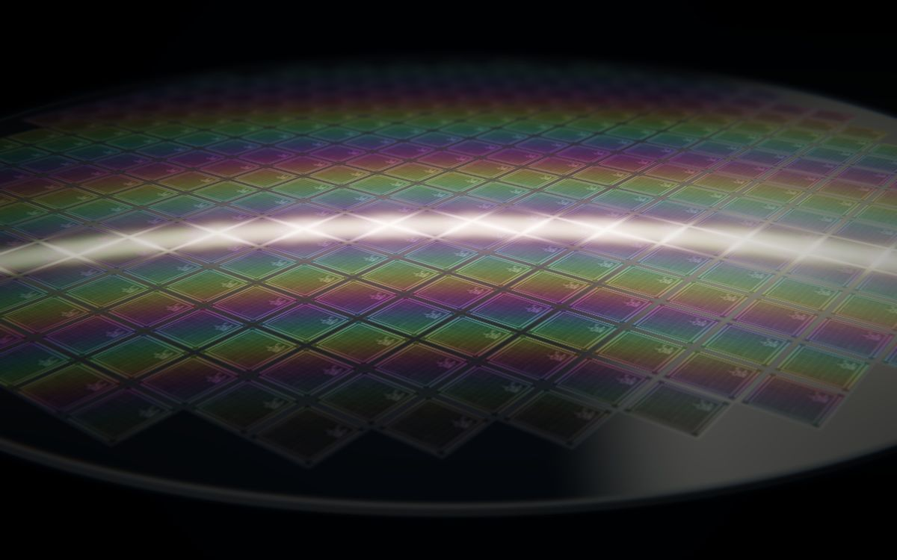

Fall 2026 · SCALE MN
SASi selected to host industry partner meetings
Stone Arch Silicon and Microfab Club have been selected to host SCALE MN industry partner meetings at the University of Minnesota Twin Cities this fall.
Partner matching and scheduling are underway. We'll share meeting details once they are confirmed.
 Meeting dates to be announced
Meeting dates to be announced